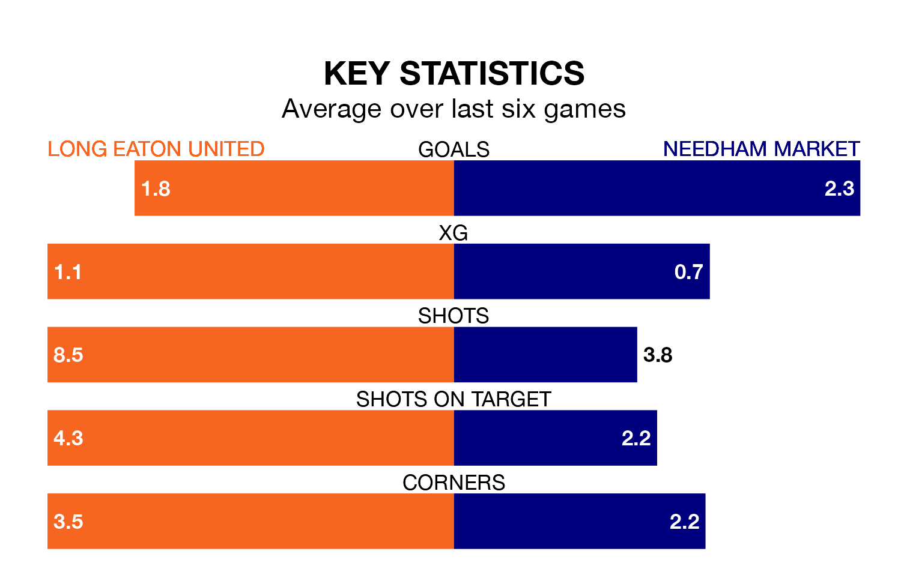

Relegation candidates Long Eaton United face a challenge against high-flying Needham Market on Saturday.
Long Eaton United are 21st in the Southern League Premier – Central table, and have picked up four wins and five draws in their 33 games to date.
Needham Market, meanwhile, are second in the standings with 66 points, having won 20 and drawn six of their first 30 matches, and are two points behind table-toppers Mickleover Sports.
With 32 goals in 33 games so far this season, Long Eaton are the league's second-lowest scorers with 1.0 goals per game. And they are conceding more than average, letting in 89 goals at a rate of 2.7 per game.
Needham Market, meanwhile, are above average scorers, with 2.0 goals per game, compared to a league average of 1.5. They have conceded 0.8 goals per game.
United are in disappointing form in the Southern League Premier Central, with one win and three draws from their last six games.
With five wins and a draw over that period, the visitors' form is much better – they have taken 16 points from 18, compared to the home team's six.
Long Eaton's last match was on Tuesday, a 2-2 draw against Leamington.
Needham Market drew 1-1 with Stourbridge last time out, also on Tuesday.
Updated: 09:34 (UTC), 08/03/24